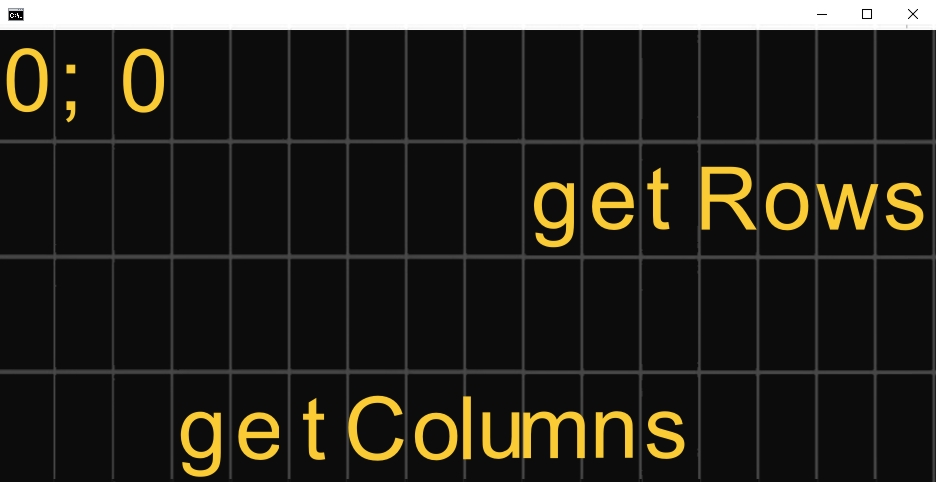
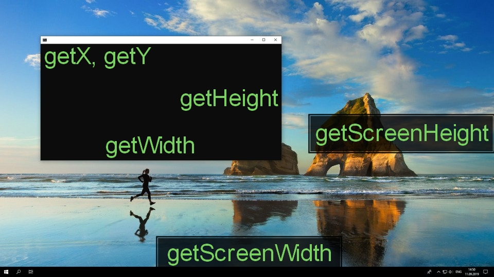
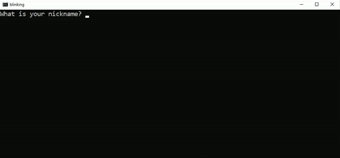

Window
Window object is used to get and set console window size and its properties.
Table of Set functions
- bool setSizeChars(int columns, int rows)
- bool setSizePixels(int width, int height)
- bool setPositionPixels(int x, int y)
- bool setPositionCenter()
- bool setFullscreenWindow()
- bool setFullscreenBorderless()
- bool setColor(Color foreground, Color background)
- bool setTitle(string title)
Table of Show functions
- bool showBlinking()
- bool hideBlinking()
- bool showSelection()
- bool hideSelection()
- bool showScrollbars(int columns, int rows)
- bool hideScrollbars()
Table of Get functions
- int getX()
- int getY()
- int getWidth()
- int getHeight()
- int getColumns()
- int getRows()
- int getScreenWidth()
- int getScreenHeight()
- int getBarHeight()
Information
The difference between a console window or simply console and screen is very important. Console is an application used to run commands and executable files. Screen is the full size of working area on monitor. The position and size of console window can be changed by user or by code itself. You can use functions below to get and set these properties exactly.
The console window and screen size are different for each user. When publishing an application you should account for these different screen sizes. The easiest solution is to use Window.setFullscreenBorderless and Cursor.setFontChars. The first function sets the console size to match the screen size and the second function adjusts cursor font to a given number of characters in columns and rows. For getting mouse position, use Mouse.getRows and Mouse.getCollumns instead of raw pixels.
Character size
When working inside a console, the most important functions are Window.getRows and Window.getColumns. You can use these functions to determine exact number of characters you can write to console. You also can set these using Window.setSizeChars.

Pixel size
When working with raw pixels, following six functions can be used. Functions getX and getY retrieve position of top left corner of the console window in pixels. You also can set the position with Window.setPositionCenter or Window.setPositionPixels. Window width and height in pixels are obtained using getWidth and getHeight. For resizing window in pixels you can use setSizePixels. Finally, monitor screen size can be obtained using getScreenWidth and getScreenHeight.

Blinking
Console blinking is useful when waiting for user input. Windows console shows this animation at the current cursor position. When making interactive games, you maybe want to hide it using hideBlinking().

Selection
When clicking with mouse to console window, it selects current text and pauses the program. For example, if you want to click on menu item instead of selecting it, call hideSelection() beforehand.
Scrollbars
Scrollbars allow you to write a lot of text which would not otherwise fit to one console window. If you want to set your scrollbar size, call showScrollbars() with integer parameters. If you don't need them use hideScrollbars().
Window can be used as following example.
Window.setFullscreenBorderless();
middle = Window.getColumns() / 2;
center = Window.getRows() / 2;
Functions
bool setSizeChars(int columns, int rows)
This function sets the console window size to specified number of characters. The result depends on font size.
To set the window size to fullscreen use setFullscreenWindow or setFullscreenBorderless instead.
Parameters
int - number of columns resized console will have
rows - number of rows resized console will have
Return value
Return type is bool. Return value is true if everything works, else false.
Setting size to low number of characters can throw an error, because the window
is too small to draw navigation pane. One solution is to set higher font size.
Example
This example sets screen size to only 9 chars and prints a simple frame.
Cursor.setFontPixels(30, 30);
Window.setSizeChars(9, 9);
Cursor.printChar(7, 7, 'X');
Cursor.printChar(1, 1, 'X');
Cursor.printChar(1, 7, 'X');
Cursor.printChar(7, 1, 'X');
bool setSizePixels(int width, int height)
This function sets the console window size to specified pixels. Window is automatically aligned to center. Trailing characters are shown on the next lines.
For new console information use getColumns and getRows.
To set the window size to fullscreen use setFullscreenWindow or setFullscreenBorderless instead.
Parameters
int - height of new window in pixels
int - width of new window in pixels
Return value
Return type is bool. Return value is true if everything works, else false.
Example
This example changes the window size three times and waits for user input after each one.
Window.setSizePixels(640, 480);
Keyboard.waitUser();
Window.setSizePixels(1024, 720);
Keyboard.waitUser();
Window.setSizePixels(1920, 1080);
Keyboard.waitUser();
bool setPositionPixels(int x, int y)
This function sets the position of console window in pixels.
If you want to set window position to center you can use setPositionCenter
Parameters
int - x pixel position of window
int - y pixel position of window
Return value
Return type is bool. Return value is true if everything works, else false.
Example
This example sets the position of the window to left top third of the screen.
int xpos = Window.getScreenWidth()/3 - Window.getWidth()/2;
int ypos = Window.getScreenHeight()/3 - Window.getHeight()/2;
Window.setPositionPixels(xpos, ypos);
bool setPositionCenter()
This function sets position of console window to the center of the screen. This function is called automatically after Window.setSizePixels and Window.setSizeChars.
Parameters
This function doesn't have any parameters.
Return value
Return type is bool. Return value is true if everything works, else false.
Example
This example sets the position of the window to center and creates a loading bar.
Window.setPositionCenter();
std::cout << "Retrieving information" << std::endl;
for(int i = 0; i <= 21; i++)
{
std::cout << '.';
Keyboard.wait(30);
}
bool setFullscreenWindow()
This function sets the console size to maximum. This function doesn't hide borders, top navigation panel is still visible and also the bottom application pane.
If you want to fill with console to entire fullscreen, use setFullscreenBorderless
Parameters
This function doesn't have any parameters.
Return value
Return type is bool. Return value is true if everything works, else false.
Example
This example resizes the window and writes three crosses in the bottom of the console.
Window.setFullscreenWindow();
int middle = Window.getColumns() / 2 - 6;
int bottom = Window.getRows() - 1;
Cursor.setPosition(middle, bottom);
std::cout << "-x- -x- -x-";
bool setFullscreenBorderless()
This function fills the entire screen with the console size. This function hides top navigation panel and bottom application pane. This function is designed for full scale applications and games.
If you want to set the console back to window use the function again or use setFullscreenWindow.
Parameters
This function doesn't have any parameters.
Return value
Return type is bool. Return value is true if everything works, else false.
Example
This example asks the user, if they .
std::string answer;
std::cout << "Do you want to set the console to fullscreen? ";
std::cin >> answer;
if (answer == "Yes")
{
std::cout << "Console was set to fullscreen. ";
Window.setFullscreenBorderless();
}
bool setColor(Color foreground, Color background)
This function sets the default colors for console. You specify the foreground color and background color. This function will repaint whole window with all characters.
If you want to clear all text use clearScreen.
Parameters
Color any color constant, text foreground color
Color any color constant, text background color
Return value
Return type is bool. Return value is true if everything works, else false.
Example
This example sets the console colors as a preferred theme.
std::string theme = "blue";
if (theme == "blue")
Window.setColor(WHITE, BLUE);
else if (theme == "green")
Window.setColor(LIGHTYELLOW, GREEN);
std::cout << "Menu Window" << std::endl;
bool setTitle(string title)
This function sets the name of the console. The text is written in console header. Function does not change the given string, meaning you can call this function without creating a string variable.
Parameters
string any string from standard library, string is only used as a constant.
Return value
Return type is bool. Return value is true if everything works, else false.
Example
This example sets window color and title, and writes a simple text to console.
Window.setColor(WHITE, CYAN);
Window.setTitle("RockOS");
Window.hideScrollbars();
Cursor.setFontSize(20);
std::cout << "Welcome in RockOS!" << std::endl;
bool showBlinking()
This function shows the blinking animation on cursor position when waiting for user input. It is useful when waiting for user input. It is set by default.
Parameters
This function doesn't have any parameters.
Return value
Return type is bool. Return value is true if everything works, else false.
Example
This example asks the user for their name and then writes to screen.
using namespace std;
string name;
Window.showBlinking();
cout << "What is your name? ";
cin >> name;
cout << "Hello " << name << "!";
bool hideBlinking()
This function hides the blinking animation on cursor position when waiting for user input. It is useful when making games.
Parameters
This function doesn't have any parameters.
Return value
Return type is bool. Return value is true if everything works, else false.
Example
This example flies a dragon across the console window. Notice one blank character in the cout.
Window.hideBlinking();
int x = 0;
while(true)
{
std::cout << " Dragon";
Cursor.setPosition(x++,0);
Keyboard.wait(5);
}
bool showSelection()
This function enables the selection in console application. Selecting text pauses the console application. It is useful when writing an important data for user. It is set by default.
Parameters
This function doesn't have any parameters.
Return value
Return type is bool. Return value is true if everything works, else false.
Example
This example writes a random code to screen and asks the user to copy it.
#include <stdlib.h>
Window.showSelection();
std::cout << "Please copy this code: ";
for (int i = 0; i < 16; i++)
std::cout << (char) ('A' + rand() % ('Z' - 'A' + 1));
bool hideSelection()
This function enables the selection in console application. Selecting text pauses the console application. It is useful when writing an important data for user. It is set by default.
Parameters
This function doesn't have any parameters.
Return value
Return type is bool. Return value is true if everything works, else false.
Example
This example writes text and then waits until user releases left mouse button. Without hideSelection this example would not work correctly.
Window.hideSelection();
std::cout << "== | Start the game | == " << std::endl;
while(!Keyboard.getReleased(VK_LBUTTON))
Keyboard.wait(30);
std::cout << "Loading the scenes ...";
bool showScrollbars(int columns, int rows)
This function shows the scrollbars in console and sets their size. It also resizes the console buffer meaning you can write more or less text in console. Setting one parameter to zero hides corresponding scrollbar.
Parameters
int - number of horizontal characters
int - number of vertical characters
Return value
Return type is bool. Return value is true if everything works, else false.
Example
This example writes list of squared numbers.
Window.setSizeChars(80, 20);
Window.showScrollbars(0, 50);
for(int i = 0; i <= 50; i++)
std::cout << i << ":\t" << i * i << std::endl;
bool hideScrollbars()
This function hides the scrollbars in console. It also removes all characters that are out of bounds. Due to this fact, it is recommended to stay in one console screen and not to write large texts at once.
Parameters
This function doesn't have any parameters.
Return value
Return type is bool. Return value is true if everything works, else false.
Example
This example prints out a circle out of 'o' characters. Hiding scrollbars isn't necessary, but picture is cleaner.
Window.hideScrollbars();
int x = 0, y = 0;
for(int i = -10; i <= 10; i++)
for(int j = -10; j <= 10; j++)
if (i * i + j * j < 80)
Cursor.printChar(10 + i, 10 + j, 'o');
int getX()
This function returns left coordinate of the window in pixels. It is the left most coordinate of working area.
You can use Window.setPositionPixels or Window.setPositionCenter to set position of window using a code.
Parameters
This function doesn't have any parameters.
Return value
Return type is int. Return value is x pixel position of top left corner.
Example
This example prints a sword pointing in direction of mouse.
if (Mouse.getX() < Window.getX())
std::cout << "<;;;;;;;;;]xxxxx(";
else
std::cout << ")xxxxx[;;;;;;;;;>";
int getY()
This function returns top coordinate of the window in pixels. It returns position of top corner of working area, without height of navigation bar. You can use getBarHeight to manually adjust coordinate to your needs.
You can use Window.setPositionPixels or Window.setPositionCenter to set position of window using a code.
Parameters
This function doesn't have any parameters.
Return value
Return type is int. Return value is y pixel position of top left corner.
Example
This example sets console position to center if console is outside the screen.
if (Window.getY() + Window.getHeight() > Window.getScreenHeight())
Window.setPositionCenter();
int getWidth()
This function returns width of the window in pixels. When calculating position of right corner of window use sum of Window.getX() and Window.getWidth().
Parameters
This function doesn't have any parameters.
Return value
Return type is int. Return value is size in x of the window.
Example
This example sets the console size if console is too small.
int size = Window.getScreenWidth() / 2;
if (Window.getWidth() < size)
Window.setSizePixels(size, Window.getScreenHeight()/2);
int getHeight()
This function returns height of the window in pixels. When calculating position of bottom corner of window use sum of Window.getX() and Window.getHeight().
Parameters
This function doesn't have any parameters.
Return value
Return type is int. Return value is size in y of the window.
Example
This example sets the screen size to match ratio of 16 : 9.
int wh = Window.getHeight();
int ww = (16 * wh) / 9;
Window.setSizePixels(ww, wh);
int getColumns()
This function returns size of the window in columns. It is used when writing text to middle of the screen or to its corners. You can set window size in columns and rows using Window.setSizeChars().
Parameters
This function doesn't have any parameters.
Return value
Return type is int. Return value is number of columns of the window.
Example
This example writes text in the middle of console width.
std::string text = "Start the application";
int pos = Window.getColumns()/2 - text.length()/2 -1;
Cursor.setPosition(pos, 0);
std::cout << text;
int getRows()
This function returns size of the window in rows. It is used when writing text to middle of the screen or to its corners. You can set window size in columns and rows using Window.setSizeChars().
Parameters
This function doesn't have any parameters.
Return value
Return type is int. Return value is number of rows of the window.
Example
This example writes a simple cross across the screen.
int x = 0, rows = Window.getRows(), max = 2 * rows - 2;
for(int y = 0; y < rows; y++)
{
Cursor.setPosition(x, y);
std::cout << "XXX";
Cursor.setPosition(max - x, y);
std::cout << "XXX";
x += 2;
}
int getScreenWidth()
This function returns width of the screen in pixels.
If you want to set window position to center use Window.setPositionCenter().
Parameters
This function doesn't have any parameters.
Return value
Return type is int. Return value is width of the screen in pixels.
Example
This example resizes the console size to the half of screen size.
int screen_width = Window.getScreenWidth();
int screen_height = Window.getScreenHeight();
Window.setSizePixels(screen_width/2, screen_height/2);
int getScreenHeight()
This function returns height of the screen in pixels. It is the size of working area. You can use getBarHeight to add height of navigation bar.
If you want to set window position to center use Window.setPositionCenter().
Parameters
This function doesn't have any parameters.
Return value
Return type is int. Return value is height of the screen in pixels.
Example
This prints screen ratio. It uses greatest common devisor (gcd) from numberic, but you can write your own.
#include <numeric>
int width = Window.getScreenWidth();
int height = Window.getScreenHeight();
int greatest = std::gcd(width, height);
std::cout << "Your ratio is " << width/greatest << " : " << height/greatest;
int getBarHeight()
This function returns height of the title bar in pixels. With this function you can determine if you are in fullscreen mode. If you want to make interactive application use Mouse.getX and Mouse.getY.
Parameters
This function doesn't have any parameters.
Return value
Return type is int. Return value is approximated height of the window title bar in pixels.
Example
This example asks user to hold Y key to set console to borderless mode. Then it writes a simple message. Keep in mind that the second if statement is not necessary in this small example and code can rewritten without it.
std::cout << "Hold Y to set window to borderless mode." << std::endl;
Keyboard.waitUser();
if (Keyboard.get('Y'))
Window.setFullscreenBorderless();
if (!Window.getBarHeight())
std::cout << "You are in borderless fullscreen mode.";